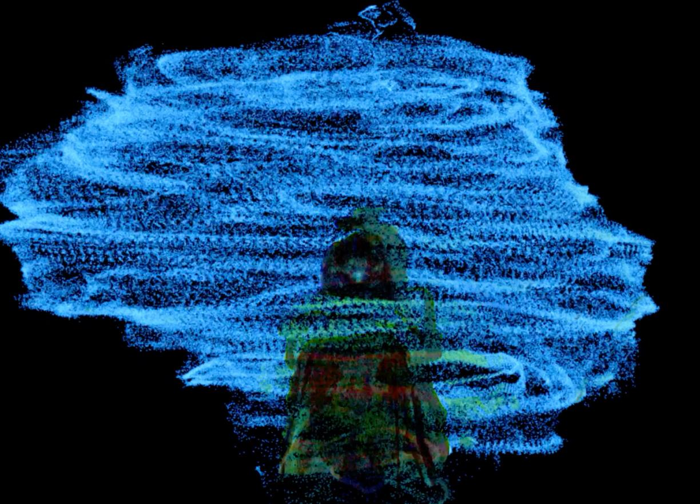
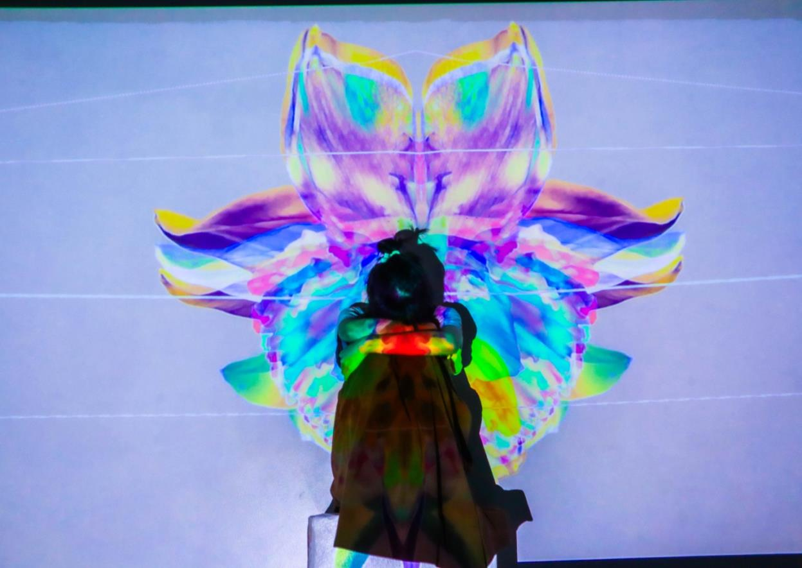
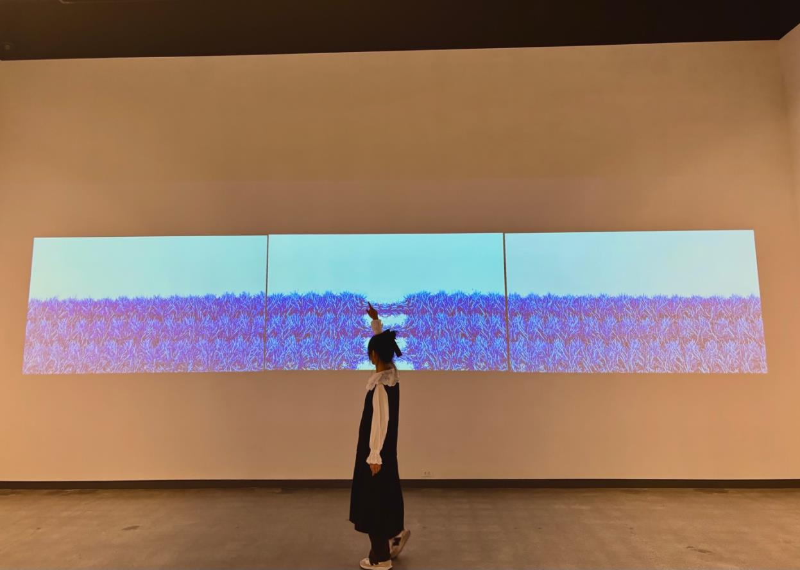
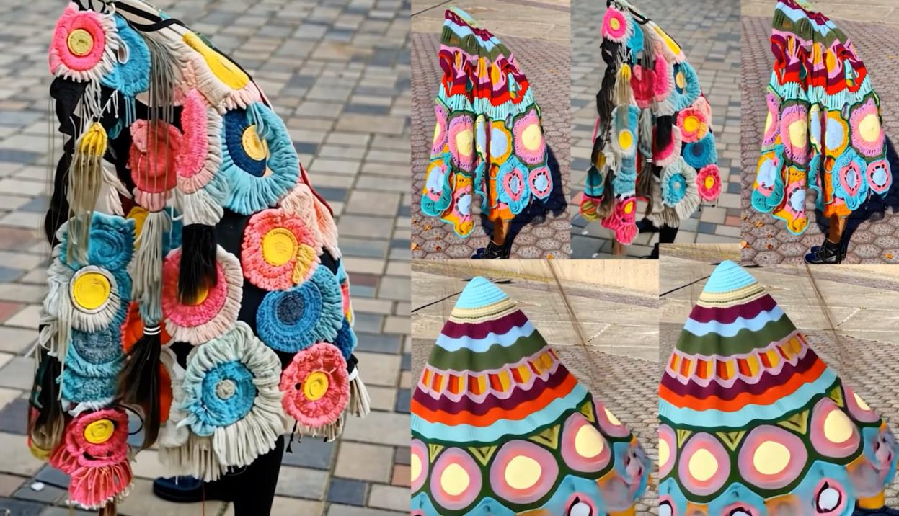

threads of becoming
~/anna/projects/threads-of-becomingMFA thesis exhibition — Washington State University, 2025
This thesis explores the process of self-reconstruction within the immigrant experience, examining how cultural displacement challenges notions of identity and belonging. Threads of Becoming includes works that reflect a personal journey of self-discovery and adaptation, but they also extend beyond the personal, gesturing toward a collective process of transformation.
exhibition documentation
I.
Mind: Meditating

Waves of Transmission

Between Stillness and Bloom
II.
Body: Interactive

Threads of Becoming
III.
Soul: Becoming
Unravel
